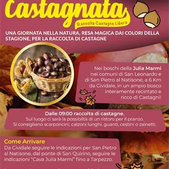

dom 25 ott · dalle 09:00
Castagnata nei boschi di Julia Marmi
Domenica 25 ottobre 2026, dalle 09:00, una giornata nella natura dedicata alla raccolta libera di castagne nei boschi della Julia Marmi, con la presenza dei produttori di Sapori nelle Valli e delle loro eccellenze.
 Indicazioni
Indicazioni
- Costi e prenotazioni
- Costo non indicato · Prenotazione non indicata
- Programma
- Programma da verificare. Apri la fonte ufficiale per orari e possibili aggiornamenti.
- In caso di maltempo
- Nessuna indicazione specifica pubblicata.
- Note
- Acquisito automaticamente dalla fonte.
L’EVENTO
Descrizione completa
Domenica 25 ottobre 2026, dalle 09:00 , una giornata nella natura dedicata alla raccolta libera di castagne nei boschi della Julia Marmi , con la presenza dei produttori di Sapori nelle Valli e delle loro eccellenze. Orario della giornata : dalle 09:00, con conclusione nel primo pomeriggio. Una domenica tra i colori dell’autunno
La raccolta si svolge in un ampio bosco interamente recintato e ricco di castagni, nei comuni di San Leonardo e San Pietro al Natisone, a circa 6 km da Cividale. Sul luogo sarà disponibile una possibilità di ristoro per il pranzo. Cosa portare
Si consigliano scarponcini, pantaloni lunghi e guanti , oltre a un cestino o uno zainetto per la raccolta. La meta può essere raggiunta con qualsiasi mezzo e sono disponibili ampi parcheggi. Programma
ore 9:00 - Apertura cancelli e alzabandiera ore 9:30 - Camminata dei castagni in 7 tappe
7 tappe per conoscere la nostra evoluzione nella vita a passo lento per poi raggiungere la cima in sintonia con noi stessi e la natura. La camminata dei 7 Chakra è una pratica di meditazione camminata che unisce il movimento consapevole all'attenzione sui sette centri energetici principali del corpo, noti come Chakra. L'obbiettivo è armonizzare ed equilibrare l'energia di ciascun chakra, ore 9:30 incontro e partenza ore 10:00 (durata 2 ore).
Carla Alzanavi insegnante Isef e yoga.
Per le prenotazioni Whatsapp 3332006342 ore 9:30 - Passeggiata Ecologica alla scoperta del territorio e delle sue peculiarità, con Paolo e Andrea di Fare Verde FVG ore 10:00 - Passeggiata nel Castagneto accompagnati dalla guida naturalistica Marco Zorzenon e dall' Associazione Micologia e Botanica Udinese ore 10:00 - Giri con i Pony a cura di Fabietto Fans Club ore 10:30 - Racconti e storie del castagneto accompagnati dallo storico esperto del territorio Giovanni Coren ore 11:30 - Polenta gigante a cura di Gruppo tutela antica polenta di Fauglis. Dimostrazione cani da soccorso: unità cinofile dell'associazione ore 14:30 - Addestramento cani da catastrofe
Per maggiori informazioni : sito ufficiale Sapori nelle Valli .
IL PROGRAMMA
Programma e orari
Appuntamenti raccolti dalle fonti elencate. Dove manca un orario, non è ancora disponibile in questa scheda.
Programma pubblicato
- ore 9:00 - Apertura cancelli e alzabandiera
- ore 9:30 -
- ore 10:00 -
- ore 10:00 - Giri con i Pony a cura di
- ore 10:30 -
- ore 11:30 -
- ore 14:30 -
INFORMAZIONI UTILI
Prima di partire
- Controllare la fonte prima di partire.
ORGANIZZAZIONE